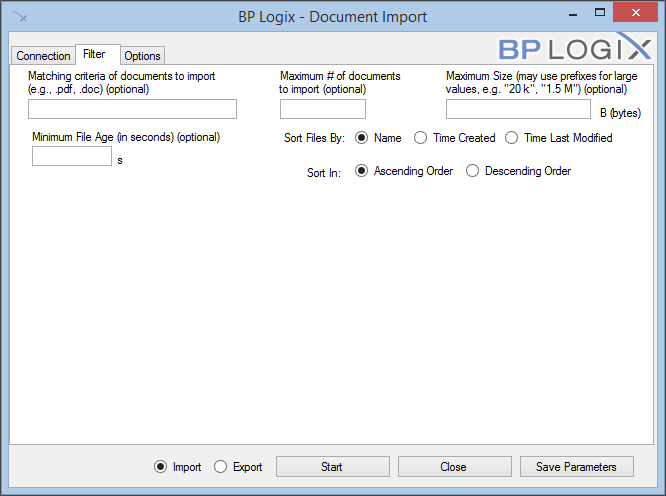

|
|
Lesson Contents | In this Lesson, you will learn how to configure the bpImport and bpImportEmail utilities. |
Process Director provides a utility for importing or exporting documents automatically between Process Director and file system folders, named "BPImport". The utility does not import/export any content list items other than documents, so Forms, Knowledge Views, etc., are not affected by the bpImport utility.
BPImport makes it easy to import documents from a file system when moving from a file based system to Process Director as your document management system. This utility can be run interactively with a dialog prompting for input fields, or scheduled to perform an automatic import on a scheduled basis. The import or export can be run from the machine on which Process Director is installed, or from a remote computer. You must enter credentials for a user that has full permissions to the folder in which to import/export.
The executable file, bpImport.exe, is located in the c:\Program Files\BP Logix\Process Director\ directory by default. You can copy this utility to any computer that has Internet Explorer 6 or higher installed. Simply execute bpImport.exe to launch the dialog, and press “Start” to begin the import/export process. The status of the import is displayed on the dialog.
The bpImport utility has a tabbed interface, and the fields in the interface are generally the same whether you wish to import or export documents.
The connection tab creates the connection between Process Director and your file system.

The complete URL to the server running Process Director.
The User ID to use for the import routine. This user must be a system administrator. This User ID is designated as the document owner for the new documents.
The password to use for the import routine. This user must be a system administrator.
Specifies an optional amount of time in milliseconds to delay between each file imported/exported. The default is no delay. This is only needed if you want to give the server time to respond to other requests when many documents are being imported at once.
Enter the Partition name or ID to use when importing.
Specifies the starting folder in the Process Director database. If this field is not specified, new documents will be stored in the root folder.
Specifies the starting location to the documents to be imported. This can specify a network path, or a file system path. The utility will import all files in the folder, and will traverse through all subdirectories as well. The relative folder structure will be maintained in Process Director.
The file path on the local computer into which all of the exported files will be placed.
Radio buttons to select whether you wish to import documents into Process Director, or export documents from Process Director.
The Filter tab enables you to specify the criteria for the documents you'd like to import/export.

Specifies a filter that is matched against the file name before it is imported/exported. This can be used, for example, to only import documents that have a .pdf extension. If this field is not specified, all documents will be imported.
Specify an optional maximum number of documents to import/export.
Specify an optional maximum number of bytes for a document. Documents larger than this number of bytes on the local file system will be skipped. (Note: a kilobyte is 1,024 bytes, a megabyte is 1,048,576 bytes, and a gigabyte is 1,073,741,924 bytes.)
Enables you to specify the number of seconds since the file was created. Documents newer than the number of seconds specified will be excluded from processing.
This option enables you to determine the order in which files are imported/exported. You can select from one of the following options:
The default order is alphabetical sorting by name.
You can set the import to sort in Ascending or descending order.
When the Import radio button is selected, the Options tab enables you to specify some additional options when importing.

If this is selected it will attempt to find matching file names with “.XML” appended to the name. These files contain XML Meta Data that can be used to set categories and attributes of the document in Process Director. Refer to the section below regarding the format of the XML file.
If selected, this will overwrite existing files on the Process Director server. This option is unchecked by default.
If selected, this option will remove files from your file system after they are imported, or from the Content List after they are exported. Files will be deleted only after they are successfully imported into the Process Director database. This option can be used, for instance, to create a drop folder for documents to automatically be imported based on a schedule. Users and/or applications can drop documents into a file system folder, and the scheduled import utility will import and remove them from the folder.
If selected, there will be no confirmation dialog for every file that is deleted. If this option is not selected, you will be prompted before every file is removed.
When the Export radio button is selected, the Options tab enables you to specify some additional options when exporting.
When exporting items from the Content List, the folder structure of the Content List will be replicated in the local file system during the export.

If selected, this will overwrite existing files on the file system. This option is selected by default.
If selected, this option will remove files from the Content List in Process Director after they are exported. Files will be deleted only after they are successfully exported into the file system.
If selected, there will be no confirmation dialog for every file that is deleted. If this option is not selected, you will be prompted by Process Director before every file is removed.
The import utility can include meta data with each of the files being uploaded to Process Director. This meta data can set the categories and attributes for the document on the server. This occurs if the option is selected to allow associated meta data files on the import dialog. If this option is selected the import utility will attempt to find matching file names with “.XML” appended to the name. For example, if the import utility finds a file named mydoc.pdf, it will attempt to locate the mydoc.pdf.xml file for the meta data. The meta data XML file must be of a certain format to be recognized as valid meta data. The XML file must contain the following structure and tags.
The <META_NAME> must match an External Name in a category attribute for the document to be assigned to that category. If a matching External Name is not found in the category tree the meta data is discarded after the upload completes.
For example, assume you have a category named Operations that contains a subcategory named Quality with an attribute name of ActionManager. You can assign this entire category tree (i.e. Operations.Quality) to the imported document by using a matching External Name in the ActionManager attribute. If the external name in the ActionManager attribute is set to “manager_name”, the XML for the imported document would look as follows:
To set values for checkboxes, the values YES and NO correspond to a checked state and an unchecked state, respectively.
Date values vary based on locale: if you’re in the USA, use mm/dd/yyyy. If you’re elsewhere, use dd/mm/yyyy.
The bpEmailimport utility (bpEmailImport.exe) allows you to send formatted emails to a process either on a schedule or any time an email is received. Using bpEmailImport.exe, you can set the conditions and format under which you would like to import the emails.

Enter the URL of the Process Director here.
Enter your User information in order to let bpLogixImport.exe log onto your Process Director. Click the Test PD Credentials button to see if the information you entered was valid.
Enter the name of the partition that you wish to import emails to.
You can import the emails to a specific folder in the partition, using this field to specify the path.
This is the URL of the server sending your email.
Enter the port you use to connect to your POP server. By default, the server port is 110, however if you connect to your POP server using a different port, enter it there.
You can use a secure protocol to retrieve your email by checking this box.
Enter your Username and Password for the POP server to let bpLogixImport.exe retrieve incoming emails. Click the Test Server Credentials button to verify that your input was valid

Enter a number in this field to set the maximum number of emails able to be imported at once.
You can tell bpEmailImport.exe to only import emails up to a certain age (in seconds, by default).
You can use regular expressions to filter which emails will be imported by the sender of the email.
You can use regular expressions to filter which emails will be imported by their subjects.
You can use regular expressions to filter which emails will be imported by the content of their bodies.
You can set a delay between each email imported to reduce server traffic.

You can store a history of all previous emails in a specific file on your server. When this option is selected, you can click the Browse button to browse to the file you desire to use to store the email tracking information.
If you're using an IMAP email system, you can move the messages to a different folder for storage. When this option is selected, you can enter the name of the storage folder in the text box provided.
You cans elect this option to delete the emails after they've been imported. This option is mainly applicable to POP3 email systems, and is not recommended for IMAP systems.
Enter a number, in bytes, of the maximum attachment size for emails you wish to import, if desired.
Selecting this option will encapsulate any email attachments into the EML or MSG file that will be created to contain the email message.
Selecting this option will add the email attachments as separate files and appended as reference objects to the EML or MSG files. You can then further manipulate the attachments, if desired. For instance, you can run an Item Actions custom task to import the attachments into a separate folder in the Content List.
You can select to use either the MSG or EML file format to store the imported message.
Selecting this option will add the appropriate file extension to the imported file. This should be selected by default. For example, this is necessary if you plan to export the message to a local computer and use an email client to open it.
You can choose to have old files be overwritten by new ones.
You may want to automatically schedule the import allowing for Smart Folders. This allows users to drop documents in a folder on a file system and have it automatically imported in to Process Director with the same folder structure used on the file system. This can automatically start a workflow for each new document added. To facilitate this you will schedule the non-interactive import command using the command line options. The import GUI has a button called “Save Parameters” which is used to save all of the current settings in the dialog into popup dialog for copying to the clipboard or save as a batch file. The command line options will specify the fields documented above. Here is the list of command line options available, and the mappings to the dialog fields:
|
Parameter Name |
Description |
Alternate Name |
|---|---|---|
|
directory PATH |
Import files from PATH |
-d |
|
delay NUMBER |
Delay each import by NUMBER milliseconds |
|
|
delete |
Delete files after successful import |
|
|
folder PATH |
Import files into Process Director folder at PATH |
-f |
|
filter FILTER |
Limit import to only files of types in FILTER (comma-separated extensions) |
|
|
partition NAME |
Import into partition NAME |
-i |
|
maxnum NUMBER |
Limit the number of files to import to NUMBER |
-m |
|
metadata |
Include metadata with import files (in corresponding XML files) |
|
|
no-gui |
Run in non-interactive mode (required for scheduling) |
-n |
|
overwrite |
Overwrite files on import with the same name already in Process Director |
|
|
password PASSWORD |
Connect to Process Director as user with password PASSWORD |
-p |
|
user USERNAME |
Connect to Process Director as USER |
-u |
|
webserviceurl URL |
Connect to Process Director at URL |
-w |
| Log PATH | Folder path into which log files will be written | -l |
Running in non-interactive mode requires the following arguments:
-n, --webserviceurl, --partition, --user, --password, --directory
To run the import utility and delete files after a successful import:
To run the import utility with Meta Data and a 50ms delay after every import:
Running a filter on the subject line of the email:
bpImport.exe -w "http://hostname/" -u "user1" -p "" -i "Test Partition" -d "C:\Windows\Temp"
--filter subject "^((?!out of the office|out of office|vacation|afwezig|annual
leave|indisponibilité|abwesenheitsnotiz|urlaub).)*$"
When running the import utility non-interactive from a command line or scheduler, any errors will be written to a file named bpU.log in the Logs directory where the bpImport.exe exists.
The import utility can include Meta Data with each of the files being uploaded to Process Director. This Meta Data can set the categories and attributes for the document on the server. This occurs if the option is selected to allow associated Meta Data files on the import dialog. If this option is selected the import utility will attempt to find matching file names with “.XML” appended to the name. For example, if the import utility finds a file named mydoc.pdf, it will attempt to locate the mydoc.pdf.xml file for the Meta Data. The Meta Data XML file must be of a certain format to be recognized as valid Meta Data. The XML file must contain the following structure and tags.
The <META_NAME> must match an External Name in a category attribute for the document to be assigned to that category. If a matching External Name is not found in the category tree the Meta Data is discarded after the upload completes.
For example, assume you have a category named Operations that contains a subcategory named Quality with an attribute name of ActionManager. You can assign this entire category tree (i.e. Operations.Quality) to the imported document by using a matching External Name in the ActionManager attribute. If the external name in the ActionManager attribute is set to “manager_name”, the XML for the imported document would look as follows:
To set values for checkboxes, the values YES and NO correspond to a checked state and an unchecked state, respectively.
Date values vary based on locale: if you’re in the USA, use mm/dd/yyyy. If you’re elsewhere, use dd/mm/yyyy.
To schedule any Process Director task (e.g. an import task) using the Microsoft Windows Scheduled Tasks utility, follow one of the procedures below. One of the most common uses of the Windows Scheduler is running the activity check page periodically.
Open the Windows Start > All Programs > Accessories > System Tools > Scheduled Tasks menu item. This will display the Windows Scheduler. Click on the “Add a Scheduled Task” item and browse for the application to run. Go to the Process Director install directory and choose the program (e.g. bpImport.exe). Then continue with the scheduler indicating that it should run every day. When prompted for user credentials, ensure you enter a user that will not have the password change occur too often, because any change to this password will prevent the scheduled task from running. You can optionally create a new user account to run this task under (ensure the account you choose has the appropriate permissions by logging in as that user and running the bpImport.exe).
Once the task has been created, open the advanced properties of the item to configure the task. Change the Run input box to include the appropriate parameters to the command.
The following dialog is displayed when the properties of the task are viewed. This is also where the Windows user account that this task is run as can be changed.

The scheduling wizard only allows the task to be scheduled once a day. To run this import command more often, click on the Schedule tab and then click on the Advanced button to reconfigure the schedule. In the advanced settings, click on the Repeat task check box, this will repeat the task at the interval you define. For example to run this command every 5 minutes all day, set the repeat task interval to every 5 minutes and set it to run for a duration of 24 hours. Consult the Microsoft help for more information on this utility.

 When running the Process Director import utilities from the Windows scheduler, any errors will be written to a file named bpU.log in same the directory where the bpImport.exe exists.
When running the Process Director import utilities from the Windows scheduler, any errors will be written to a file named bpU.log in same the directory where the bpImport.exe exists.To open the Task Scheduler, click the Start Button, then type "Task Scheduler" in the search box. The utility will appear in the Start menu results. Click on the Task Scheduler program item.

From the Actions pane on the right side of the Task Scheduler window, click the Create Task item to open the Create Task dialog box.

In the General tab of the Create Task dialog box, enter the Name of the task, e.g., "Run BP Import", then set the appropriate security options.

To create the schedule for the task, you will need to add a trigger, so select the Trigger tab, then click the New button.

Clicking the New Button will open a New Trigger dialog box from which you can set the tasks schedule. In the example below, the trigger is set to run the task every 2 days at 10:30 PM.

Click the OK button to save and close your trigger configuration, then click the Actions tab to set the task action. In the Actions tab, click the New button to open the New Action dialog box, from which you can create the action for the task, i.e., to run the bpImport task.

In the New Action dialog box, select "Start a Program" from the Action dropdown, then browse to select the bpImport task.

You can add the additional arguments in the Add Arguments box, e.g., –w "http://localhost" –u "user1" –d "m:\My Docs" --delete, then click the OK button to save and close the action.
To finish creating the task, click the Create Task dialog box's OK button.
When running the Process Director import utilities from the Windows scheduler, any errors will be written to a file named bpU.log in same the directory where the bpImport.exe exists.